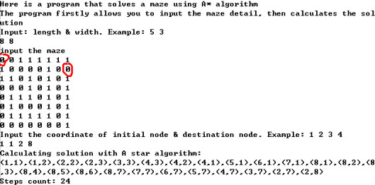
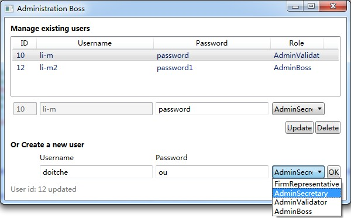
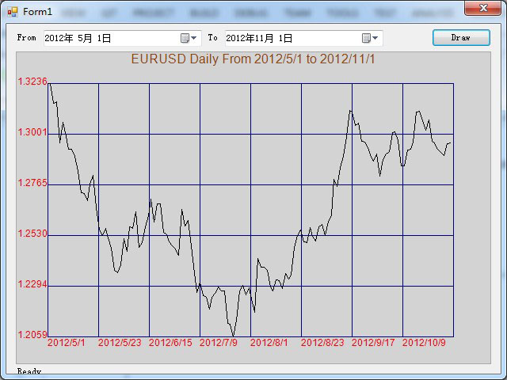

This page itself.
Static pages written by HTML, CSS & Javascript.
Click here to see the Horizental version (Beta XD)
And the Bootstraped version.
Currently tested only on Chrome.
Solving a maze with A* algorithm using C++.
The type priority_queue in the STL library is employed as it allows to customize element’s order within the set.
Execution Example:

The project consists of two programs written in C#.
The server end provide services using WCF, allow users to query the database through the interface; the client end is a WPF program that consumes these services.
The services are in the form of synchronous mode.
Asynchronous services can be implemented likewise.
As for the client, after role selection defined in LegalPubClient/MainWindow.xaml.cs, actions can be performed that defined in LegalPubClient/Windows/AdministrationBoss.xaml.cs, LegalPubClient/Windows/AdministrationSecretary.xaml.cs, LegalPubClient/Windows/AdministrationValidator.xaml.cs, and LegalPubClient/Windows/FirmRepresentative.xaml.cs.
As for the server, model defined in PublicationService/Model.Context.cs, corresponding classes are PublicationService/Document.cs and PublicationService/User.cs.
Services are defined in PublicationService/Service1.cs(where database connection is also defined) and corresponding interfaces are presented in PublicationService/IService1.cs.
Client Execution Example:

This project is a Razor V3 website written in C# that realizes the same functionality as the project WindowsFormApplication-RateChart: allow user to define two date in the input, then query the database and display EURUSD rate chart within the corresponding period.
This is much easier to implement as ASP.NET itself is equipped with Chart Helper.
Main functionalities are defined in Default.cshtml.
This program is a Windows Form Application written in C#.
The program firstly reads from database the EURUSD exchange rate within a specific period according to user’s input, then draw the chart using GDI.
The program draws only a simple line chart, but can be modified to other forms such as candlestick chart without too much effort.
The entry is in Chart/Program.cs.
Layout of the window and chart is defined in Chart/Form1.cs.
Data structure is defined in Chart/Rate.cs.
Chart/ReadData.cs connects to the database.
Execution Example:

This is a program written in Java.
Given a web log where customers’ purchasing histories are recorded, the program generalize the regularity of the customers’ purchasing, and to find out possible unusual behaviours.
To do that, firstly the method of sequence alignment is used to calculate the fluctuations of purchasing history in time dimension, then control charts, namely EWMA (exponentially-weighted moving average) chart and CUSUM (cumulative sum) chart, are introduced to detect possible exceptions.
The entry is at SequenceAlignment/src/sequenceAlignment/Entry.java and main procedures is executed in SequenceAlignment/src/sequenceAlignment/Procedures.java.
Related report: SequenceAlignment.pdf
Plans: Implement Apriori Algorithm and its optimizations with C#.
The "Apriori" project:
Implement the original Apriori Algorithm.
Entry is Program.cs.
Methodes are defined in Apriori.cs.
Still under construction.
Briefing:
Already done: CRUD
N?chster Halt: user management
This is a Java EE dynamic web project, managed by Maven and runs on Tomcat.
The program allows users to query the database through a JSP page or API.
The project is tested with JUnit 4.